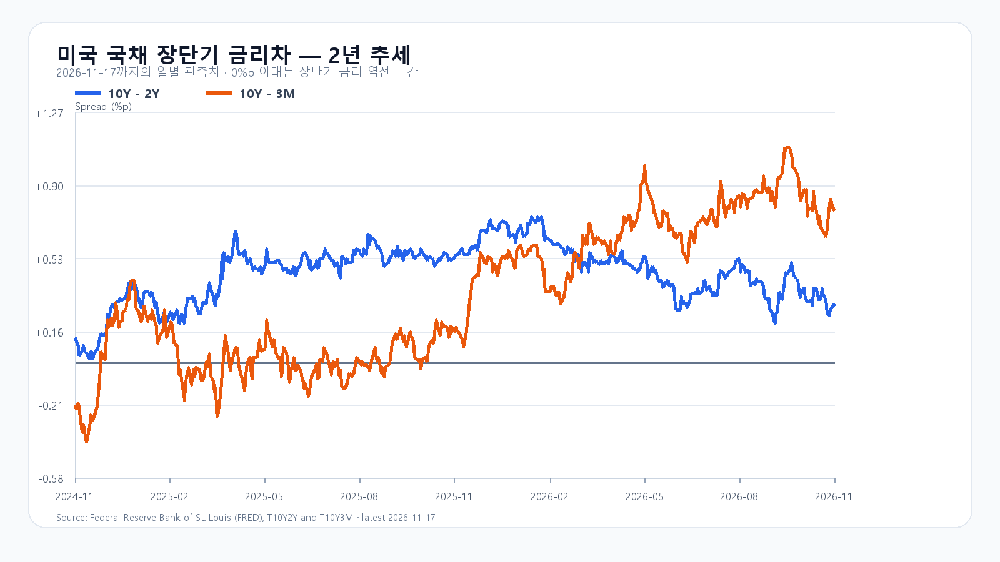
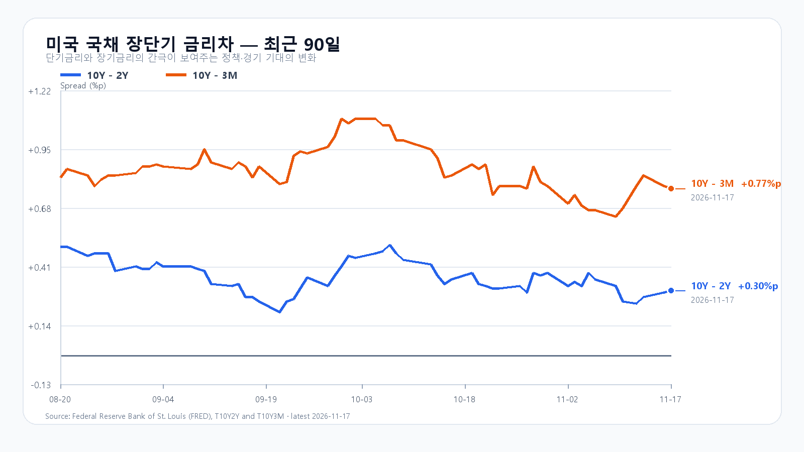

Nvidia가 실적과 다음 분기 매출 전망을 내놓자 미국 시간외 반도체주가 반등했습니다. 전날 5,000 아래로 내려간 코스피에도 반등의 근거가 생겼습니다. 다만 개장 직후 상승이 이어지려면 삼성전자·SK하이닉스의 저점 유지와 국내 매수 회복이 따라야 합니다.
실적은 수요를 보여 줬고, 이익률은 숙제를 남겼다
Nvidia의 2027회계연도 3분기 매출은 1,158억 달러로 전년보다 103% 늘었습니다. 데이터센터 매출은 1,076억 달러로 110% 증가했습니다. 다음 분기 매출 전망은 1,300억 달러±3%이며 한 주가 추가로 포함됩니다. 중국 데이터센터 연산 매출은 전망에 넣지 않았습니다. 회사 실적
대규모 AI 투자가 실제 공급사 매출로 이어지고 있다는 점은 국내 HBM 수요에도 긍정적인 근거입니다. 반면 GAAP 매출총이익률은 이번 분기 74.8%에서 다음 분기 전망 71~72%로 낮아집니다. 매출 증가만으로 공급사의 수익성 개선까지 같은 속도로 이어진다고 보기는 어렵습니다.
현금은 늘었지만 매출채권과 재고도 커졌다
분기 영업현금흐름은 약 483억 달러, 잉여현금흐름은 약 438억 달러입니다. 매출채권은 약 810억 달러, 재고는 약 397억 달러로 회계연도 초보다 늘었습니다. 현금 창출은 투자 지속의 버팀목이지만 고객의 결제와 재고 소화도 함께 봐야 합니다. 이 수치가 다른 빅테크의 CAPEX 집행을 보장하지는 않습니다. 재무제표
정규장과 실적 발표 뒤의 방향이 달랐다
17일 미국 정규장에서 QQQ는 0.73%, TQQQ는 2.30% 하락했습니다. SOXX는 0.17% 올랐고 SMH는 0.39% 내렸습니다. Nvidia -0.44%, AMD -0.17%, Micron -0.92%와 달리 Broadcom은 2.46% 상승했습니다. 실적 발표 전에는 업종 전체가 한 방향으로 회복한 장세가 아니었습니다. 발표 후 시간외 반응은 아래 표의 별도 시각을 기준으로 봅니다. 미국 시세
해외 데이터센터 원격접근 규제와 경영진 교체는 이미 전날 국내장에 알려진 재료입니다. 오늘 새로 더해진 실적과 시간외 반응을 구분해야 같은 악재를 두 번 계산하지 않습니다. 실적이 견조해도 지역별 주문 집행과 규제 부담은 남습니다.
메모리 현물도 제품별 방향이 갈린다
TrendForce의 17일 18:10 대만시간 표에서 DDR5 16Gb는 평균 60.333달러로 보합, DDR4 16Gb는 79.125달러로 0.32% 하락했습니다. NAND 512Gb TLC 웨이퍼 현물은 9일 기준 14.267달러로 11.67% 내렸습니다. 관측일과 제품이 다른 만큼 이를 HBM이나 기업용 SSD 계약가격의 당일 변화로 읽어서는 안 됩니다. DRAM · NAND
AI 서버 매출 확대는 고성능 메모리 주문에 유리한 배경입니다. 범용 제품의 가격 약세와 높은 주가 변동성은 별개입니다. 삼성전자·SK하이닉스의 출하와 수익성, 국내 외국인 매수를 함께 확인해야 업황 기대가 주가 회복으로 이어지는지 판단할 수 있습니다.
전날 5,000을 내준 코스피, 회복 뒤 지지가 중요하다
17일 코스피는 5,008.09에 출발해 5,084.06까지 올랐지만 4,968.48로 2.59% 하락 마감했습니다. 저가는 4,957.00입니다. KODEX 레버리지는 53,315원에 출발해 52,000~55,005원을 오간 뒤 52,175원으로 5.20% 내렸습니다. 국내 일봉
직전 기본 종가 범위 4,950~5,150에는 들어왔지만 반등 뒤 매도가 커진 흐름은 이어졌습니다. 오늘도 5,000 회복만으로 추세 전환을 판단하기 어렵습니다. 외국인 현물·KOSPI200 선물과 프로그램 비차익 매수가 동반되는지, 상승이 반도체 밖으로 확산하는지 봅니다.
세 종가 시나리오와 KODEX 기준선
기본 종가 범위는 4,950~5,150(50%)입니다. 이 범위에서 외국인 현물이 순매도하지 않는 경우를 가정합니다. 5,150 초과와 외국인·프로그램 동반 순매수가 겹치면 강세 5,150 초과~5,350(30%), 4,950 미만과 두 수급의 동반 순매도가 겹치면 약세 4,700~4,950 미만(20%)입니다. 경계값은 기본 범위에 배정합니다. 범위 이탈이나 수급 반전은 무효화 기준이며 장중 저가·고가 포락은 별도로 4,600~5,450을 둡니다.
대응 점수는 공격 20·관망 55·방어 25입니다. KODEX의 1차 지지는 전일 저가 52,000원, 반등 기준은 전일 종가 52,175원, 저항은 전일 고가 55,005원입니다. 갭 상승 뒤 55,005원을 넘더라도 매수가 유지돼야 반등 지속의 근거가 됩니다. 52,175원 아래로 되밀리면 반등을 재검토하고 52,000원 이탈과 동반 매도에는 하방 위험을 경계합니다.
환율 부담은 줄었지만 금리 수준은 높다
18일 07:36:12 KST 하나은행 달러/원 고시는 1,335.50원으로 전회보다 1원 낮았습니다. 서울 현물환 체결가와는 다릅니다. 06:59경 유가선물 전자거래 가격은 WTI 85.61달러, 브렌트 93.07달러입니다. 원화 강세가 수입 비용을 덜어도 유가와 금리의 절대 수준은 기업의 비용과 성장주 가치평가에 영향을 줍니다. 환율 · 유가
FRED의 17일 관측에서 10년-2년 금리차는 0.30%포인트, 10년-3개월은 0.77%포인트입니다. 개별 만기는 16일 기준 10년 5.12%, 2년 4.83%, 3개월 4.34%입니다. 관측일이 다른 수치를 한 시점의 곡선으로 합치지 않아야 합니다. 10년-2년 · 10년-3개월
오늘은 09:30 외국인·프로그램 방향, 10:30 반도체 저점 유지, 14:00 이후 매수 지속을 확인합니다. 조건 관측 시한은 15:20입니다. FOMC 의사록은 한국시간 19일 04:00 예정으로 다음 거래일 금리와 환율에 영향을 줄 수 있습니다. 연준 일정
발행 기준 시세
| 항목 | 값 | 원천 기준 시각 |
|---|---|---|
| KOSPI 전일 종가 | 4,968.48 | 2026-11-17T15:30:00+09:00 |
| KODEX 전일 종가 | 52,175원 | 2026-11-17T15:30:00+09:00 |
| USD/KRW 하나은행 고시 | 1,335.50원 | 2026-11-18T07:36:12+09:00 |
| NQF 최근 거래 | 27,126.00 | 2026-11-18T06:59:59+09:00 |
| ESF 최근 거래 | 7,366.50 | 2026-11-18T06:59:59+09:00 |
| BZF 최근 거래 | 93.07 | 2026-11-18T06:59:30+09:00 |
| CLF 최근 거래 | 85.61 | 2026-11-18T06:59:59+09:00 |
미국 11월 17일 정규장
| 종목 | 시가 USD | 고가 | 저가 | 종가 | 등락 |
|---|---|---|---|---|---|
| QQQ | 663.05 | 663.36 | 646.65 | 656.95 | -0.72% |
| TQQQ | 53.33 | 53.39 | 49.38 | 51.81 | -2.30% |
| SOXX | 142.84 | 142.99 | 136.17 | 141.46 | +0.17% |
| SMH | 466.43 | 466.43 | 445.32 | 460.10 | -0.39% |
| NVDA | 156.91 | 158.19 | 150.33 | 155.46 | -0.44% |
| AMD | 511.60 | 511.85 | 480.50 | 503.41 | -0.17% |
| MU | 726.22 | 726.98 | 666.88 | 712.42 | -0.92% |
| AVGO | 335.59 | 341.74 | 330.13 | 341.60 | +2.46% |
미국 시간외
11월 17일 미국 시간외 거래이며 정규장 종가 대비입니다.
| 종목 | 시간외 USD | 정규장 대비 | 시각 KST |
|---|---|---|---|
| NVDA | 162.54 | +4.56% | 2026-11-18T08:06:30+09:00 |
| AMD | 522.95 | +3.88% | 2026-11-18T08:06:24+09:00 |
| MU | 748.74 | +5.10% | 2026-11-18T08:06:31+09:00 |
| AVGO | 350.50 | +2.61% | 2026-11-18T08:06:16+09:00 |

